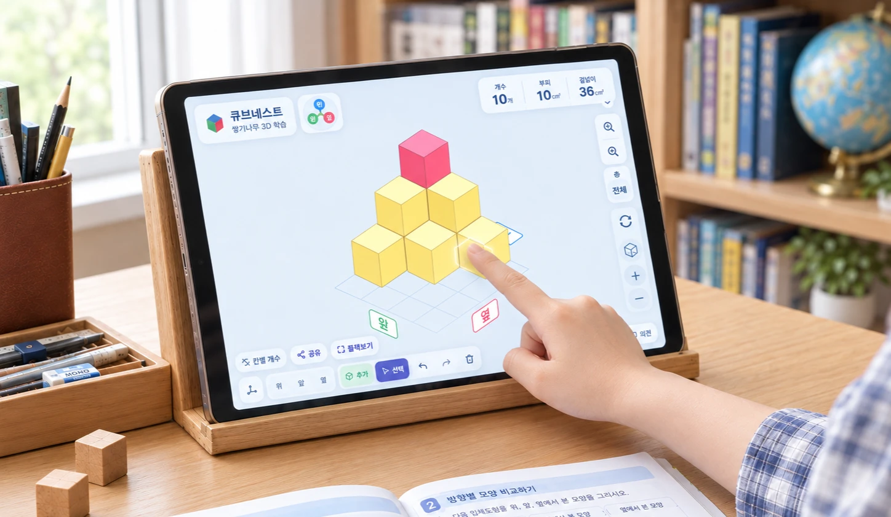

쌓은 모양을 360° 돌려가며 모든 방향에서 입체로 관찰합니다
앞도 옆도 뒤도, 보고 싶은 쪽으로 끌어서 돌려 보세요. 가려져 있던 자리까지 눈으로 확인할 수 있습니다. 개수·부피·겉넓이는 바꾸는 즉시 다시 계산됩니다.
돌리지 않고 보는 세 방향
- 쌓기나무
- 10개
- 부피
- 10cm³
- 겉넓이
- 36cm²
모양을 바꾸면 세 방향 그림과 세 값이 함께 바뀝니다. 만든 모양은 주소 하나로 그대로 전달돼요.

입체도형을 어려워하는 아이일수록,
직접 돌려 봐야 합니다
종이에 그려진 입체는 머릿속에서 돌려야 보입니다. 그 과정을 손으로 대신해 주면 뒤쪽과 가려진 자리가 눈에 들어오고, 그만큼 공간지각능력이 자랍니다. 교실에서는 한 화면을 함께 돌려 보며 설명할 수 있어, 학생마다 교구를 나눠 줄 필요가 없습니다.
교과부터 경시대회까지, 한 곳에서
유아부터 초6까지 다섯 단계, 단계마다 난이도 네 등급이 열립니다. 교과서에서 다루는 유형부터 경시대회에서 보는 추론 유형까지 한자리에 있어, 쉬우면 올리고 막히면 내리면 됩니다. 처음에 잘못 골라도 괜찮아요.
유아
세기와 위에서 본 모양, 딱 두 가지.
초 1~2
같은 두 가지를 조금 더 크게, 앞에서 본 모양까지.
초 3~4
교과에 입체도형이 거의 없는 구간. 공간지각능력을 쌓아 둡니다.
초 5
겨냥도를 처음 배우는 학년. 그림 읽기부터.
초 6기본
부피·겉넓이와 공간과 입체. 전 유형이 열립니다.
공간과 입체, 유형별 문제 19가지
세어 보기에서 시작해 위·앞·옆 그리기, 숨은 나무 찾기, 최대·최소까지. 한 단원을 유형으로 나눠 풉니다 — 묻는 방식이 바뀌면 아이가 어디서 막히는지 드러나요.
- 세 면
- 두 면
- 한 면
매일 풀 분량을, 아이마다 정해 둡니다
요일과 분량만 정해 두면 그날 풀 문제가 자동으로 배정됩니다. 아이는 링크를 눌러 풀고, 보호자는 끝냈는지와 어디서 막혔는지만 확인해요.
이번 주 · 서연 · 주 4일 · 하루 10문항
- 월끝
- 화끝
- 수쉼
- 목오늘
- 금쉼
- 토10문항
- 일쉼
지난주에 겉넓이에서 막혔어요 — 이번 주에 두 문항 더 넣었습니다
- 요일과 분량을 정합니다주 3일·하루 10문항처럼. 아이가 여럿이면 아이마다 따로 정해요.
- 그날 문제가 자동으로 배정됩니다학년과 난이도에 맞춰 뽑고, 지난주에 틀린 유형을 조금 더 넣어요.
- 종이로도 받을 수 있습니다한 주 분량을 정답지와 함께 한 번에 인쇄해요. 화면과 같은 문제입니다.
아직 만들고 있는 기능이에요. 지금은 학년·유형·난이도를 직접 골라 풀 수 있습니다.
학습은 확실하게, 아이 정보는 안전하게
아이는 로그인하지 않습니다
퀴즈도 도구도 가입 없이 바로 씁니다. 계정은 기록을 보관하려는 어른만 만들어요.
30분 뒤 자동 계산이 잠깁니다
계산이 계속 나오면 아이가 스스로 세어 보지 않게 됩니다. 먼저 세어 보고 그다음 확인하도록 편집과 관찰은 그대로 두고 계산만 잠가요.
정답은 답을 낸 뒤에 나옵니다
풀기 전에는 정답도 해설도 보이지 않습니다. 먼저 스스로 풀고 그다음 확인하는 순서가 지켜져요.
베타 기간 무료
지금은 모든 기능을 무료로 씁니다. 유료로 바뀌는 기능이 생기면 미리 알려드려요.